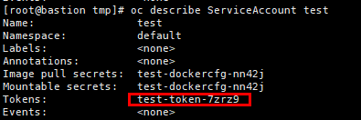

This section describes how to obtain the token of the super administrator during subsequent cluster registration in token authentication mode. The token obtained using the method described in this section can be used permanently.
Procedure
- Log in to the Kubernetes cluster in the background.
- Run the following command to create a service user with the specified name. The following steps use the created username test as an example.
oc create serviceaccount Username
- Run the following command to grant the cluster-admin role to user test:
oc adm policy add-cluster-role-to-user cluster-admin -z test
- Run the oc describe ServiceAccount test command to obtain the secret name of the user, which is the value of Tokens.

- Run the following command to obtain the token information. The value of token is the token of the super administrator (test-token-7zrz9 is the secret name obtained in 4).
oc describe secret test-token-7zrz9
Copyright © Huawei Technologies Co., Ltd.